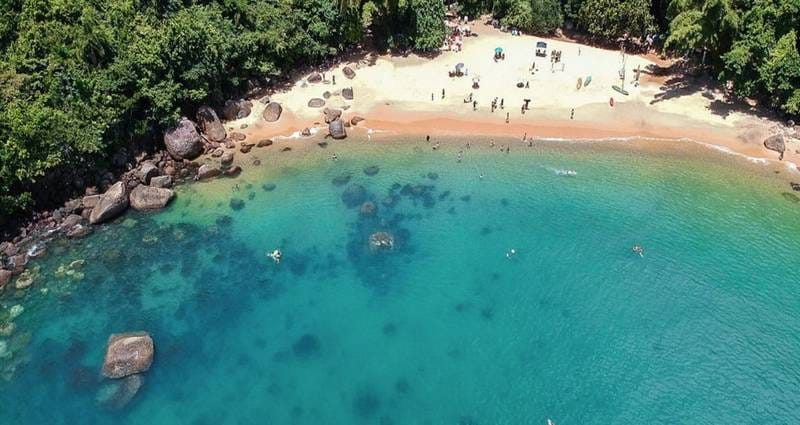
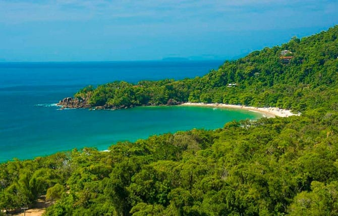
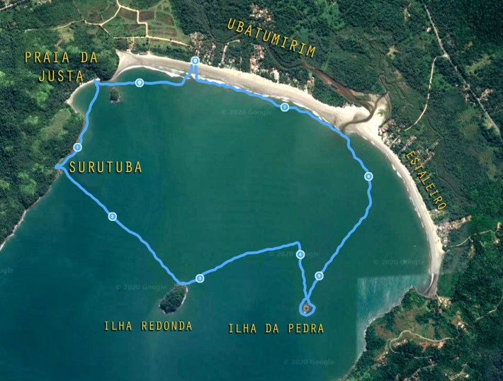
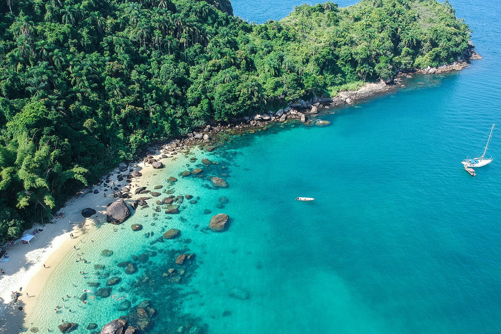
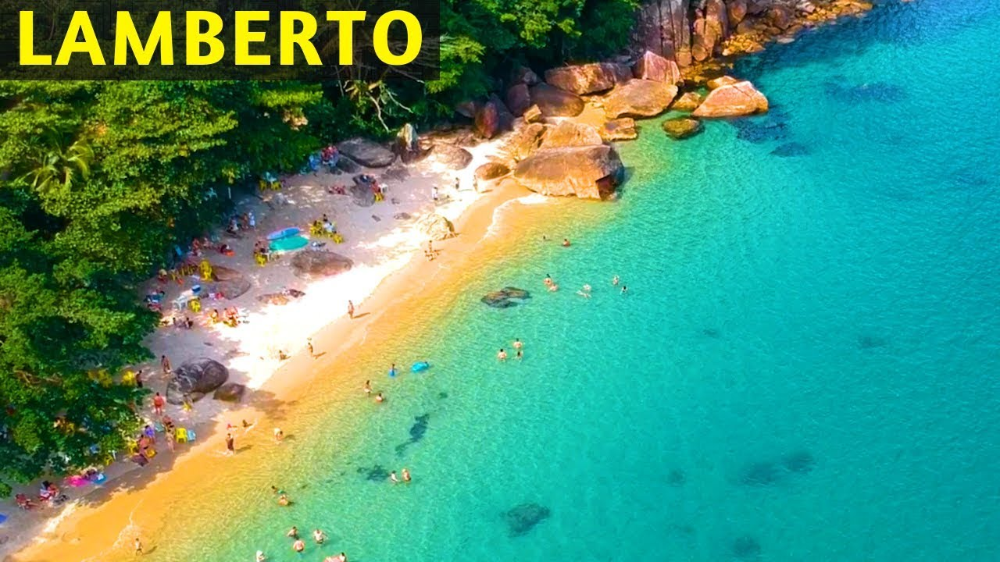
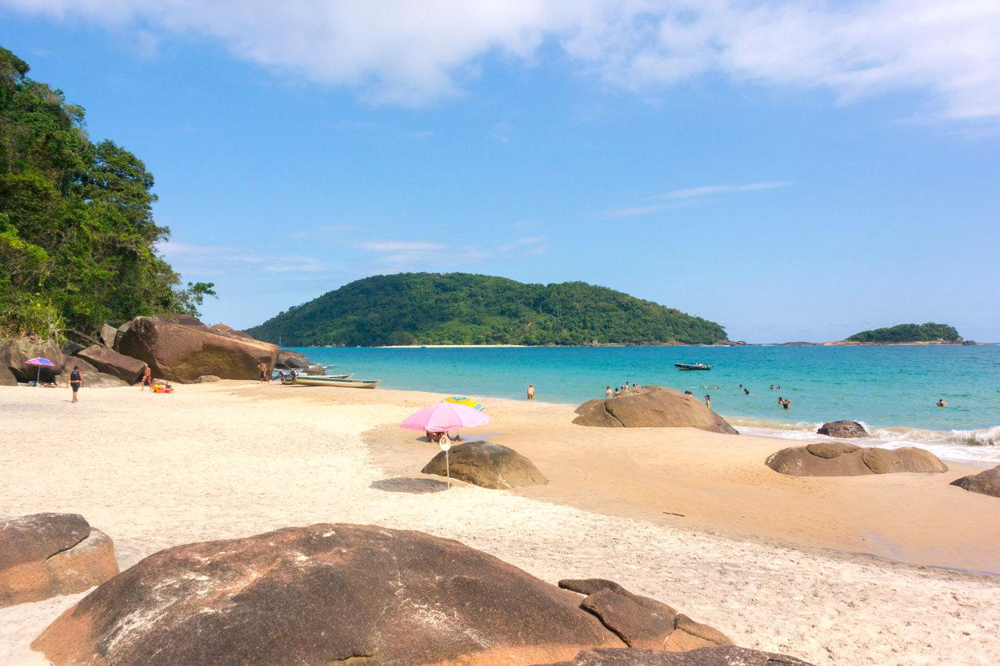
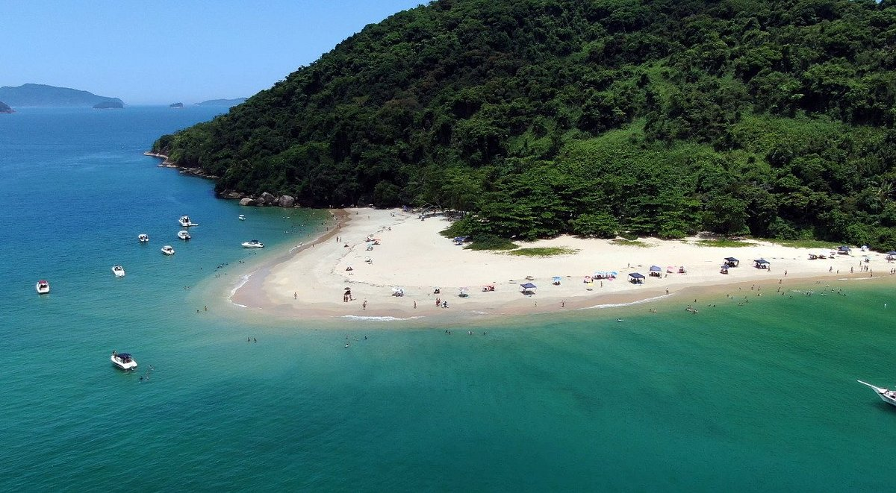
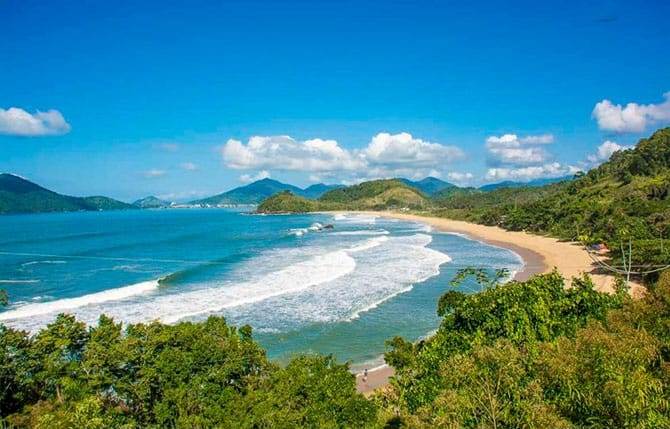

Ubatuba, localizada no litoral norte de São Paulo, é um dos destinos mais deslumbrantes do Brasil. Com mais de 100 praias e 20 ilhas paradisíacas, a cidade encanta por sua natureza exuberante, clima tropical e águas cristalinas. As praias, que variam de tranquilas enseadas a locais ideais para surfe, oferecem opções para todos os gostos.
Além das praias, Ubatuba é cercada pela Mata Atlântica, com trilhas, cachoeiras e uma rica biodiversidade, atraindo ecoturistas e amantes da natureza. A cidade também é conhecida por seu excelente turismo cultural, com museus, eventos e uma forte tradição artesanal.
Ubatuba ainda conta com infraestrutura completa, incluindo restaurantes, bares e mercados, garantindo conforto para os visitantes. Ubatuba é o destino ideal para quem busca descanso e diversão, seja em família, com amigos ou a dois.
A Praia do Cedro está localizada a aproximadamente 5km do centro de Ubatuba, é um verdadeiro paraíso, uma pequena praia com águas cristalinas e calmas, ótimas para banho e para mergulho livre, rodeada pela mata Atlântica.
O único problema dessa praia é o acesso, começando pela estrada de terra bem estreita e com buracos, depois de estacionar o carro é necessário descer uma trilha íngrime que leva aproximadamente 5 minutos, o que dificulta para quem estiver com criança ou pessoas com mais idade, mas vale muito a pena.
A Praia do Félix é extensa com sua areia branca e solta, cheia de sombras de abricós. Tem tanto águas tranquilas como uma piscina do lado direito, quanto ondas bem fortes do lado esquerdo e perfeita para os surfistas.
Possui alguns quiosques rústicos, ambulantes, restaurante japonês e casas de condomínio. Seu acesso é por uma estrada secundária da Rio Santos, onde no caminho há um mirante com uma belíssima vista para a própria praia e arredores.
A pé por pequenas trilhas é possível chegar até a Prainha do Félix (ótima para mergulho) e a Praia das Conchas.
Menos movimentada, com águas calmas e um cenário encantador, ótima para nadar. Ideal para quem quer fugir das multidões e aproveitar um momento de paz.
De lá podemos avistar diversas ilhas de Ubatuba: do Maracujá (logo em frente, no canto direito, e te digo, eu cheguei lá nadando!), Pequena dos Porcos, da Pedra, Redonda, do Negro, Ilha das Couves e Ilha do Prumurim.
Localizada em uma região afastada do centro urbano de Ubatuba, a Ilha das Couves é um local lindo. Apesar de pequena a porção de areia, a vista é demais e a água cristalina. Por não ser um local típico para comerciantes, o ambiente também é limpo e com vegetação intocada.
Para chegar na ilha é preciso pagar por alguma excursão ou utilizar o serviço de pescadores da comunidade de Picinguaba.
A Praia do Lamberto é pequenina e charmosa. Acessível por uma pequena trilha (alguns lances de escada na verdade) a partir das margens da Rio-Santos. Na orla há apenas um quiosque, que abre em períodos movimentados.
A praia do Prumirim possui 1 km de faixa de areia e muitas pedras que deixam o visual incrível. O mar pode variar entre super calmo e extremamente agitado, então é preciso ter cautela. Existem muitas conchinhas na areia e alguns quiosques tranquilos para aproveitar o litoral.
A Ilha do Prumirim, que fica próxima à praia, é um destino muito procurado por aqueles que adoram fazer passeios de barco. Ela é perfeita para quem quer desfrutar de um ambiente mais isolado e íntimo, com trilhas para explorar e um visual incrível do alto da ilha. A travessia para a ilha pode ser feita por embarcações locais que oferecem passeios guiados.
A Praia Vermelha do Norte fica no litoral Centro Norte de Ubatuba, entre as Praias do Perequê e do Alto. É o paraíso dos surfistas, já que suas ondas altas e intensas são perfeitas para a prática do esporte. Sua areia tem espessura grossa e tom avermelhado claro, com entorno de vegetação.
Seu acesso é fácil, já que fica a beira da rodovia, com estacionamento na orla. Não há hospedagens no local, mas tem quiosques, bares e uma famosa danceteria.